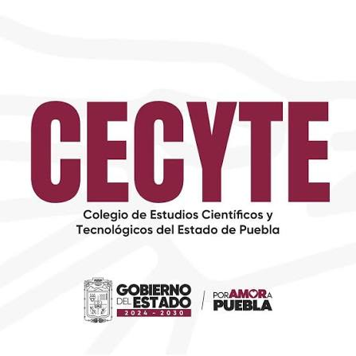

CECyTE Plantel Tlacotepec es una institucion educativa de nivel medio superior ubicada en Tlacotepec de Benito Juarez, Puebla. Ofrece una educacion de calidad y diferentes especialidades tecnicas, contribuyendo a la formacion academica y profesional de los jovenes de la region.